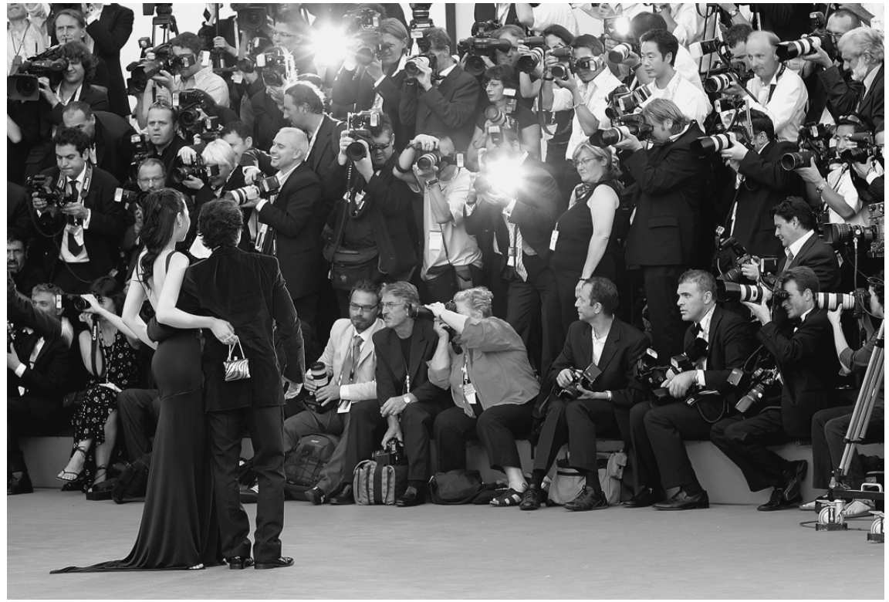

当代人们对隐私的忧虑大多来自技术的作恶能力，而对私人领域的渴望，则远在电子监控和闭路电视的这些比特和字节“勇敢的新世界”之前。事实上，人类学家已经论证过，在原始社会中存在着一种近乎普遍的追求个人和群体隐私的欲望，而这一点在适当的社会规范中也得以体现。此外，并非只有人类寻求庇护，动物也需要隐私。
什么是隐私？
在最一般的层面上，隐私的概念包含想独处、自由地做自己且不受他人窥视的束缚的欲望。这种窥视的束缚涵盖了从窥探和未经请求的公之于众，到对我们所需的“空间”的侵扰，这种空间是我们做出不受政府侵扰的私密决定所必需的。因此，“隐私”常常被用来描述一个被界定为“私人”的区域，在这个区域中，例如，妇女可以选择是否愿意堕胎，个人可以自由表达他或她的性倾向。因此，有关隐私的争论往往与有争议的道德问题（包括使用节育手段和色情制品的权利等）纠缠在一起。
在任何情况下，很明显，我们关心保护隐私的核心是个人与社会关系的概念。一旦我们认识到公共领域和私人领域之间的分离，我们就假定了一个共同体的存在，在这个共同体中，不仅这样的划分有意义，而且存在一种体制结构，使得这样一种解释成为可能。换句话说，假定“私人”的存在是以预设“公共”为前提的。
隐私和动物
艾伦·韦斯汀，《隐私和自由》，鲍利海出版公司，1967年，第8-11页。
在过去的大约一个世纪里，人们对社会公共领域的参与遭受了持续不断的削弱。我们更加以自我为中心。正如社会学家理查德·桑内特生动表明的那样，我们对执着“联络”我们自己情感的后现代心理，彻底破坏了一个真正的政治共同体的前景。矛盾的是，过度亲密的关系已经毁掉了这个政治共同体：人们走得越近，交际就越少，痛苦就越大，他们的关系就越会自相残杀。
事实上，希腊人认为，在“自己”的隐私中度过的一生，顾名思义，就是“白痴的”。同样，罗马人认为隐私仅仅是一种暂时的避难所，是为了逃避公共领域的生活。汉娜·阿伦特对此有很好的描述：
只有在罗马帝国晚期，人们才能察觉出隐私作为亲密区域的最初阶段。
正如人们所预料的那样，古代和原始社会的人们对隐私表现出不同的态度。在开创性的研究《隐私权：道德和法律基础》中，巴林顿·摩尔研究了一些早期社群的隐私状况，包括古雅典、《旧约》所揭示的犹太社会和古代中国。在中国的案例中，他阐明了儒家对国家（公共）和家庭（私人）不同领域的区分，以及关于恋爱、家庭和友谊的早期文献如何产生了脆弱的隐私权。在公元前4世纪的雅典，隐私权得到了更有力的保护。他的结论是，只有在一个具有强大自由传统的复杂社会里，才能实现通信隐私。
我们对公共和私人区域的现代划分是政治法律思潮双重运动的结果。在16-17世纪，民族国家和主权理论的出现产生了一个明显的公共领域的概念。另一方面，确认一个不受国家侵犯的私人领域，是对君主（在一定时候是议会）主张的不受限制的立法权的回应。换言之，现代国家的出现、对社会和经济活动的管制，以及对私人领域的承认，是这种公私分离的自然先决条件。
然而，历史证据只能说明故事的一部分。社会学模型有力地表达了体现这种转变的社会价值。一个特别有用的社会学二分法是社区（Gemeinschaft）与社会（Gesellschaft） [6] 之间的区别。从广义上来说，前者是一个由内在化的规范和传统组成的共同体，这些规范和传统是按照地位来管理的，但通过爱、责任、共识和共同的目标来调节。另一方面，社会是自利的个体在所谓的自由市场上为个人物质利益而竞争的一种共同体。
这种区别通常表现为社区和协会之间的区别。前者几乎没有表现出公共和私人的区分，而后者的公私区别则很明显：法律正式规定了什么被认为是公共的。这种分化也阐明了政治和经济秩序。
公共和私人领域的分离也是自由主义的核心原则。事实上，“可以说，自由主义在很大程度上是关于私人领域的界限在哪里、根据什么原则来划分、干预从何而来，以及如何对干预加以审查的论争”。法律在多大程度上可以合法地侵入“私域”，这是一个反复出现的主题，特别是在19世纪的自由主义学说中：“19世纪法律思想的中心目标之一就是在宪法、刑法和管制法——公法，以及私人交易法——侵权行为法、合同法、财产法和商法之间，建立明晰的分离。”而刑法在执行“私人道德”方面的界限问题，则持续困扰着法律哲学家和道德哲学家。
约翰·斯图亚特·穆勒在《论自由》一书中阐述的“伤害原则”，自该书出版一百五十多年来，仍然是对大多数自由主义者关于干涉个人私生活界限的论述的一个试金石，而这也是对这一原则的一种检验。对穆勒来说：
隐私的价值
没有隐私的生活是不可思议的。但隐私实际上起到什么作用呢？除了在自由民主理论中的重要性外，隐私还为创造力、心理健康、爱的能力、建立社会关系、促进信任、亲密和友谊界定了一个领域。
艾伦·韦斯汀在他的经典作品中指出了隐私的四个功能，并将这一概念的个人维度和社会维度结合起来。第一，它产生了个人自主性；个人的民主原则与这种自主性的需要相关联——避免被他人操纵或支配的愿望。第二，它提供了情感释放的机会，隐私使我们能摘下我们的社交面具：
第三，它使我们能够进行自我评价——形成和检验有创造性的道德行为和思想的能力。第四，隐私为我们提供了一种环境，使我们能够分享秘密和亲昵的言行，并进行有限的受保护的交流。
私下的不检点
欧文·戈夫曼，《日常生活中的自我呈现》，道布尔戴出版社，1959年，第128页。
隐私的困境
然而，隐私并不是一种绝对的善，可以简要地指出其七点不足之处。第一，隐私有时被认为是一种相当古板、拘谨的维多利亚价值观，用一位作家的话来说，隐私具有“一种受了伤害的文雅气质”。第二，更严重的是，对隐私的保密可能掩盖了家庭内部的压迫，尤其是男性对女性的压迫。女权主义者认为，女性受压迫的一个重要原因是她们被降格到家庭和家人的私人领域。而且，虽然国家倾向于控制公共领域，但国家不愿意侵犯私人领域——而这常常是剥削和暴力侵害女性的场所。
隐私与对女性的压迫
凯瑟琳·麦金农，《无须修改的女性主义：关于生活与法律的论述》，哈佛大学出版社，1987年，第101页。
第三，对隐私的庇护会削弱对罪犯和恐怖分子的侦查与逮捕。当然，对安全的威胁占据了当下的中心位置。有些人担心，过分积极地保护隐私可能会妨碍当局执法者履行其职责。第四，隐私可能会妨碍信息的自由流动，影响人与人之间的透明度和坦诚。第五，隐私会妨碍商业效率，增加成本。过分关注隐私会损害关键性个人信息的收集，减缓商业决策的制定，从而降低生产率。
第六，某些社群主义批评家认为，隐私权是一种不适当的个人主义权利，不应允许它凌驾于其他权利或社群价值之上。第七，如美国法官和法学家理查德·波斯纳，提出了一个反对隐私权的强有力的例证。他们认为，从经济角度来看，隐瞒贬损的个人信息可能构成一种欺骗。这一重要的批评值得仔细研究。
在试图隐瞒或限制个人信息的传播时，特别是当信息描述了他不光彩的一面的时候，个人是否以一种欺骗的形式参与其中？波斯纳断言：
但是，即使人们认可经济角度，也不能意味着人们会接受对隐瞒个人信息的经济价值的评估。个人可能愿意放弃自己在限制这种信息传播上的利益，来换取个人信息自由流动的社会利益。换句话说，波斯纳没有证明，也可能无法证明他对“相互竞争的”利益的计算必然是正确的，或者至少最有可能是正确的。
波斯纳还认为，对交易成本方面的考虑可能不利于对个人信息的法律保护。如果信息是不光彩而且准确的，就存在一种让公众普遍获得信息的社会诱因：准确的信息越发依赖于同信息有关的个人。因此，让一个社会有权获得这种信息，而不是允许个人隐瞒，是具有社会效益的。在没有不光彩信息或虚假信息的情况下，隐瞒信息对个人的价值超过了社群接触这种信息的价值。虚假的信息不会促进理性决策，因此没什么用处。
隐私权的含义
到目前为止，我一直在杂乱地使用“隐私”这个术语。我用它来描述各种各样的情况或利益——从寻求庇护到亲密的关系。这个概念根本就不是条理清楚的，这一点也不奇怪。虽然存在普遍的共识，认为我们的隐私受到了侵犯，因为私人领域受到了各种攻击——以监视、拦截我们的通信和狗仔队的活动为形式，但当众多额外的怨愤充斥于隐私的保护伞之下时，这个问题就被搅浑了。
关于这一主题的文献汗牛充栋，但并没有产生明确或前后一致的价值含义，从而为争辩妇女的权利（特别是在堕胎方面）、使用避孕药具、男女同性恋者的自由、阅读或观看淫秽材料或色情制品的权利，以及为艾滋病毒/艾滋病引发的一些私密性问题提供一个平台。在利用隐私来追求如此多完全不同的、有时是相互冲突的政治理想的过程中，已经产生了大量分析上的混乱。

图8 对名人八卦的嗜好助长了越来越多追求轰动效应的媒体
对隐私问题无动于衷
沃尔夫冈·索夫斯基，《隐私：一种宣言》，普林斯顿大学出版社，2008年，第7-8页。
隐私作为一种普遍的道德、政治或社会价值，其价值是不可否认的，但隐私的概念越被延伸，其模糊性就越大。为求清楚起见，可以说，隐私的核心是一种愿望，也可能是一种需求，即防止与我们有关的信息在未经我们同意的情况下让别人知道。但是，如上所述，还有其他问题越来越多地进入隐私领域。这在美国最为明显。最高法院表达了诸如隐私权之类的“未列举的权利”，因为它在格里斯沃尔德诉康涅狄格州案和罗伊诉韦德案（他们分别支持在避孕和堕胎方面的宪法隐私权）中做出了影响深远的决定，导致隐私权被等同于个人选择的自由：从事各种活动的自由，尽管这些活动通常在私人场所进行。换言之，隐私权的概念包括控制获取和使用身体的权利。而且，由于与管制堕胎和某些性行为相关的法律对个人隐私和政府权力都有深远的影响，因此，承认这一类别的法律包含做出个人决定的权力，即所谓的“决定隐私权”，可能是有益的。
对家庭、办公室或“私人空间”的入侵也催生了“位置隐私”的概念——这是一个不恰当的说法，它捕捉了个人领域受到公开或隐蔽的攻击所侵犯的隐私特征。
一个定义？
一个可接受的隐私定义仍然难以得出。韦斯汀那个似乎普遍存在且有影响力的想法把隐私理解为一种要求：“个人、团体或机构为他们自己确定何时、如何、在何种程度上把他们的信息传达给他人”。将隐私视为一种要求（或者更确切地说，视为一种权利），虽然假定了隐私的价值，但未能界定其内容。而且，它还包括使用或披露有关个人的任何 信息。那些将隐私理解为“生活领域”或一种心理状态的观念也会受到类似的批评。
然而，韦斯汀的定义在个人对自己信息的控制 程度方面对隐私的描述产生了更大的影响。如果将个人对信息的控制权等同于隐私，而如果个人被阻止行使这种控制，那么即使他或她不能披露个人信息，也不得不说他或她已经失去了隐私。这意味着隐私的价值是假定的。
同样，如果我明知并自愿披露个人信息，我并不会因此而失去隐私，因为我是在行使而不是放弃控制权。但是这种意义上的控制并没有充分地描述隐私，因为虽然人们可以控制是否要披露这些信息，但人们也有可能通过其他方式获得这些信息。而如果控制意味着一种更强的含义（即披露信息，即使是自愿披露，也会失去控制权，因为我不能够限制他人传播信息），这就描述了潜在的 而非实际的 隐私损失。
因此，我可能不会吸引他人的任何兴趣，也正因此，我的隐私将得到保护，无论我是否有此愿望！我控制自己的信息流和人们事实上对我的了解是有区别的。根据这一论点，为了确定这种控制是否确实保护了我的隐私，还必须知道，例如，信息的接收者是否受到限制性规范的约束。
此外，如果隐私权被视为广义控制权（或自主权）的一个方面，那么问题的关键就是人们选择隐私权的自由。但是，正如上面所表明的，你可以选择放弃自己的隐私。因此，基于控制的隐私定义涉及你做出哪些选择的问题，而不是你实施它们的方式。换句话说，这种定义预设了隐私的价值。
鉴于这些令人头痛的问题，答案是否在于试图描述隐私的特征？不过，也存在着相当大的分歧。一种观点认为，隐私包括“有限的可访问性”——由三个相互关联但独立的构成要素组成的集群：保密性，关于个人信息被知悉；匿名性，对个人的关注；以及独处，对个人的身体接触。
与侵犯隐私权不同的是，隐私的丧失发生于这样一种情况，即其他人获得关于个人的信息、关注或接触个人。这种方法声称的优点在于：第一，它是中立的，有助于客观地识别隐私的丧失；第二，它展示隐私作为一种价值的逻辑连贯性；第三，它表明了这一概念在法律环境中的效用（因为它确定了需要法律保护的场合）；第四，它包括“典型的”侵犯隐私行为，并排除了上文提及的问题，这些问题虽然常常被认为是隐私问题，但根据其自身的性质，最好被视为道德或法律问题（如噪声、臭味、堕胎、避孕、同性恋等）。
然而，即使是这种分析也存在困难。特别是为了避免假定隐私权的价值，这种分析不接受将隐私的概念限制在被泄露的信息的特征上。因此，它摒弃这样一种观点，这种观点认为，要构成隐私的一部分，有关信息必须是“私人的”，即与个人的身份有密切关系或联系。如果有关个人的任何信息（保密部分）被外人知悉，都会导致隐私的丧失，这就会严重弱化隐私的概念。
将传播有关个人信息的每一种 情况都描述为隐私的丧失，这是一种曲解。然而，如果隐私权是关于个人信息或知识的一种功能，在这种程度上，这样的理解似乎是不可避免的。换言之，就有关个人信息的问题而言，需要有某种限制或控制因素。可以说最被认同的因素是，这些信息必须是“个人的”。
声称无论何时，只要个人被他人关注或接触，就必然会失去隐私，这再次使我们忽视对隐私含义的关注。如果有人把注意力集中在你身上，或者不请自来地闯入你的独处生活，本身就是令人反感的，但我们在这些情况下对个人隐私的关注，在他或她进行我们通常认为是私人的活动时，才是最强烈的。偷窥狂汤姆比那些在公共场合跟踪我们的人更有可能冒犯我们的“隐私”观念。
有时有人争辩说，通过保护作为隐私权基础的价值（财产权、人的尊严、防止或赔偿蒙受的精神痛苦等），可以免除关于隐私权的道德和法律论述。如果是真的，这将削弱隐私概念的独特性。并且，即使是那些否认隐私权派生性的人们，对隐私权主要概念特征的看法也很少有一致意见。
更糟糕的是，关于隐私含义的争论经常是在根本不同的前提下进行的。因此，如果隐私被描述为“权利”，那么这个问题就不会和那些认为隐私是“条件”的人认真地结合在一起。前者通常是关于隐私需求的规范性陈述（无论如何定义隐私），后者仅仅是对“隐私”进行描述性陈述。此外，关于隐私的可取性的主张往往会混淆其工具性价值和内在价值；隐私本身被一些人视为目的，而另一些人则将其视为一种手段，用以确保诸如创造性、爱或情感释放等社会目的的达成。
隐私和个人信息
是否还存在别的办法？在不损害隐私作为一项基本价值的重要性的前提下，答案是否在于将引起个人诉求的问题予以单独考虑？毫无疑问，最初隐私领域有代表性的投诉与美国法律所称的“公开披露私人事实”和“侵犯个人的隐居、独处或私事”有关。当然，最近电脑化个人资料的收集和使用，以及与电子社会有关的其他问题，已成为人们关注的主要隐私问题。
看来很明显，这些问题在本质上都有一个共同点，那就是限制关于个人的私事分别被公布、入侵或误用的程度。这并不是说，某些情况（如单身一人）或某些行为（如电话窃听）不应分别被定性为隐私或侵犯隐私。
在将隐私问题定位在个人信息层面的过程中，出现了两个明显的问题：第一，“个人”一词应理解为什么？第二，在什么情况下才算是“个人”事项？某个“个人”事项是否仅仅因为个人声称它是“个人”的，或者存在本质上是个人的事项？声称我的政治观点是个人的，必须取决于某些规范，这些规范禁止或限制对这些观点进行调查或未经授权的报道。不过，我只援引我有权保留自己的意见这条规范就足够了。
买卖隐私
劳伦斯·莱斯格，《网络空间的法典和其他法律》，基础图书出版公司，1999年，第162-163页。
这些规范显然既与文化有关，也是可变的。如上所述，人类学证据表明，原始社会对隐私的态度是有差别的。毫无疑问，在现代社会中，对“私人”的理解会出现波动。在大多数现代社会中，就私人生活的某些方面而言，肯定没有五十年前那些典型的社会那么缺乏信心。难道没有一类信息可以被合理地描述为“个人的”吗？通常有人反对说，“私密性”不是信息本身的属性；同样的信息在一种情况下可能被认为是非常私密的，而在另一种情况下就不是如此或根本就不私密。
反隐私时刻
詹姆斯·B.鲁尔，载于J.B.鲁尔和G. 格林利夫编，《全球隐私保护：第一代》，爱德华·埃尔加出版社，2008年，第272-273页。
当然，简可能更倾向于向她的分析师或密友透露私人事实，而不是向她的雇主或合伙人透露，她对报纸披露信息的反对可能更强烈。但是在所有这三种情况下，这些信息仍然是“个人的”。不同的是，她可以决定在多大程度上允许这些信息被公开或被使用。将第一种情况（向分析师透露）中的信息描述为“根本不是私人的”甚至“不是那么私人的”都是违反直觉的。我们当然要说，精神病医生正在倾听讨论中的个人事实，如果谈话被秘密记录下来，或者精神病医生被要求就其患者的同性恋关系或不忠行为出庭做证，我们应该会说，个人信息被记录下来或被披露了。情况已明显发生改变，但它影响的是，可合理预期个人在何种程度上会反对人们使用或传播其个人信息，而非信息本身的质量。
因此，“个人信息”的任何界定都必须包括两个要素，它应当既提及信息的质量 ，也提及个人对信息使用的合理期望 。一个要素在很大程度上是另一个要素的应变量。换句话说，这里提出的“个人信息”的概念既是描述性的，也是规范性的。
个人信息包括与个人有关的事实、通信或意见，可以合理地期望这些信息被他或她认为是私密的或敏感的，因此希望隐瞒或至少限制收集、使用或传播这些信息。当然，“事实”并不局限于文本数据，而是涵盖了广泛的信息，包括图像、DNA和其他遗传与生物识别数据，如指纹、面部和虹膜识别，以及越来越多种类的与我们有关的信息，这些信息是通过技术能够被发现和利用的。
更清晰？
有人可能会立即提出反对意见，就是通过将“个人信息”的概念置于对个人期望的客观确定之上，对“个人信息”的界定实际上是纯粹的规范性定义，因此会避免有关保护“个人信息”是否可取或其他方面的问询。但是，任何将信息归类为“个人”、“敏感”或“私密”的尝试，都假定了这些信息需要被特别对待。
如果有必要参照某些客观的标准来界定信息，那么不可避免地，分类就取决于那些可以合法地被宣称是“个人的”信息。在任何试验中，只有那些希望隐瞒的信息是合理的，才有可能成为我们关注的焦点，特别是在我们想寻求有效的法律保护的情况下更是如此。例如，如果一个人认为有关他的汽车的信息是个人的，并因此想隐瞒汽车发动机大小的细节，那么他会发现很难说服任何人，他的车辆的登记文件构成了“个人信息”的泄露。对于什么是“个人的”进行客观测试，通常都会排除此类信息。
但是，如果个人的要求涉及影响其私生活的信息，这就会变得更加困难。例如，一个人希望阻止披露有关其因盗窃而受审和定罪的事实，这并非不可理喻。将建议的个人信息定义作为判断这类信息是否属于个人信息的第一顺序标准，可能意味着这种要求是合法的。但是，这种要求很可能被否决，理由是，司法行政的程序是公开的。然而，时间的推移可能会改变这类事件的性质，一度属于公共 事务的事项可能在若干年后被合理地视为私人事务。
同样，将从旧报纸上获得的曾经公开的信息出版，若干年后可能会被认为是对个人信息的冒犯性披露。因此，这意味着客观标准并不妨碍在隐瞒个人信息的权利或要求与社会在言论自由等方面的利益冲突之间取得平衡。通过自愿披露、同意使用或传播个人信息，个人并不放弃对个人信息保留一定控制权的主张。例如，他或她可以允许将信息用于一种目的（如医疗诊断），但在用于另一种目的（如就业）时可以反对。
至于第三方表达的关于个人的意见，如果该意见的存在是个人所知道 的（如求职申请所要求的证明材料），可以合理地期望她只允许那些与决定是否雇用她有直接关系的人获得这些材料。如果对她的评估是她不 知道的（例如，她在信贷咨询机构的数据库中被描述为“风险很大”），或者她的通信已被截获或记录，可以合理地预知她会反对使用或披露这些信息（在秘密监控的情况下，反对实际采集的信息），特别是在她意识到 这些信息实际上或可能是误导或不准确的情况下，更是如此。
的确，就其本身而言，一条信息可能是完全无伤大雅的，但当与另外一条同样并无恶意的数据结合在一起时，这些信息就会转化为某种真正私密的东西。因此，黄女士的地址是公开的，这本身很难构成“私人”信息。但如果把这个和她的诸如职业等信息联系起来，这种结合就会把数据转换成易受攻击的细节，对此，她有合法权利隐瞒个人信息。
个人信息的客观概念并不忽视数据产生的完整背景。在评估有关资料是否符合“个人”的最低要求时，个人所投诉的事实，显然需要“全面”研究。受害者认为，公开的数据（电话号码、地址、车牌等）是他们希望控制或限制披露或传播的信息，这是不合理的。一般来说，只有当这些数据变得敏感时，例如将它们与其他数据联系在一起时，才可以说是实现了一个合理的申诉。
合理性并不完全排除个人习性的运作，只要其影响与个案的情况有关。客观的检验方法也不会否认这些因素在决定个人将信息视为个人的是否合理方面的重要性。例如，英国人在透露其工资问题上出了名的含糊其词，而斯堪的纳维亚人远没有这样做。文化因素不可避免地会影响到人们将信息视为个人信息是否合理的判断。这在特定的社会中也同样如此。
在任何情况下，没有一项信息本身是个人的信息。一份匿名医疗档案、银行对账单或性丑闻的露骨披露本是无害的，直到其与某个人挂起钩来。只有当信息主体的身份被揭露时，它才成为个人信息。一旦这一门槛被突破，这也就是不争的事实；只有在满足客观检验的情况下，个人信息才值得保护。但这不是在概念或社会真空中发生的，必须具体情况具体分析。
尽管在隐私的含义、范围和限制方面存在分歧，但对隐私的意义和对保护隐私所面临的威胁，几乎没有什么不确定性。基本上人们都认为必须制止对这种基本价值的侵蚀。下一章考虑将隐私认定为合法权利。